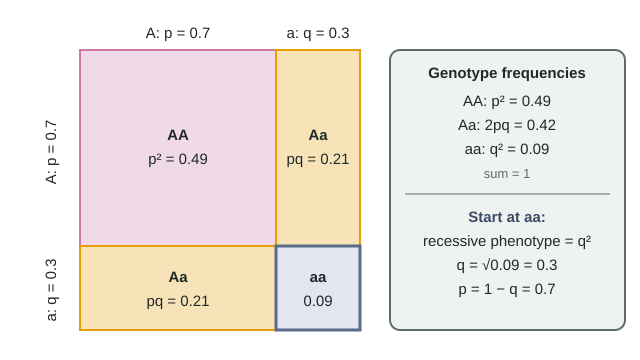

Seeing the hidden alleles
In a meadow of wildflowers, purple (A) is completely dominant to white (a). You can count white plants, because every white plant is aa. You cannot see which purple plants are AA and which are Aa. The Hardy-Weinberg equations on the formula sheet let you work out the hidden numbers, as long as the population is assumed to be in equilibrium:
- p + q = 1 (allele frequencies)
- p² + 2pq + q² = 1 (genotype frequencies: AA, Aa, aa)
Worked example: from phenotypes to genotypes

Data: 400 plants; 364 purple, 36 white. Assume Hardy-Weinberg equilibrium.
- White plants are aa, so q² = 36 ÷ 400 = 0.09.
- q = √0.09 = 0.30.
- p = 1 − 0.30 = 0.70.
- Genotype frequencies: AA = p² = 0.49; Aa = 2pq = 2(0.70)(0.30) = 0.42; aa = q² = 0.09. (Check: 0.49 + 0.42 + 0.09 = 1.)
- Counts: AA = 0.49 × 400 = 196; Aa = 0.42 × 400 = 168; aa = 36.
The trap: 364 ÷ 400 = 0.91 is the frequency of purple plants, which is p² + 2pq, not p. Always begin with the recessive class, the one phenotype that has a single genotype. And remember why equilibrium must be assumed: only then does the white-flower frequency equal q². If white plants were being eaten more, or plants mated mostly with neighbors of their own color, q² would not equal the white frequency.
Carrier frequency
A recessive disorder affects 1 in 2,500 newborns. q² = 0.0004, so q = 0.02, p = 0.98, and carriers are 2pq = 2(0.98)(0.02) = 0.0392, about 1 person in 26. Carriers outnumber affected people about 98 to 1, and about 98% of the copies of the recessive allele sit in carriers. That explains why selection against a rare recessive condition lowers q only very slowly: selection acts on aa individuals, and almost none of the allele copies are in them.
When you have genotype counts: count alleles
If every genotype is known (by DNA testing, or with codominant alleles), you do not need the square root. Count alleles directly. A small island population of 100 lizards has 50 BB, 30 Bb and 20 bb.
- B alleles = 2 × 50 + 30 = 130 of 200, so p = 0.65; q = 0.35.
- Expected under equilibrium: BB = p² × 100 = 42.25; Bb = 2pq × 100 = 45.5; bb = q² × 100 = 12.25.
| Genotype | o | e | (o − e)² ÷ e |
|---|---|---|---|
| BB | 50 | 42.25 | 1.42 |
| Bb | 30 | 45.5 | 5.28 |
| bb | 20 | 12.25 | 4.90 |
| Total | 100 | 100 | χ² = 11.60 |
χ² = 11.60 is above the critical value whether you use 1 degree of freedom (3.84) or 2 (5.99), so reject equilibrium. The pattern says why: heterozygotes are far rarer than expected and both homozygotes more common, which is what mating between relatives in a small population produces.
Measuring evolution: change in allele frequency
A beetle population's recessive green phenotype fell from 25% to 16% over several generations. Then q fell from √0.25 = 0.50 to √0.16 = 0.40: a change of −0.10. Allele frequencies changing over generations is evolution at the population level. Hardy-Weinberg tells you what to expect if nothing is acting; departures point to selection, drift, gene flow, mutation or nonrandom mating.
| Event | Changes q? | Why |
|---|---|---|
| Migrants with a different q join | Yes | Gene flow adds alleles at a different frequency |
| aa individuals survive less often | Yes | Selection removes a alleles |
| Random 95% of a small population dies | Yes, unpredictably | Genetic drift in the survivors |
| Population grows with random mating, no selection | No | Equilibrium conditions hold |